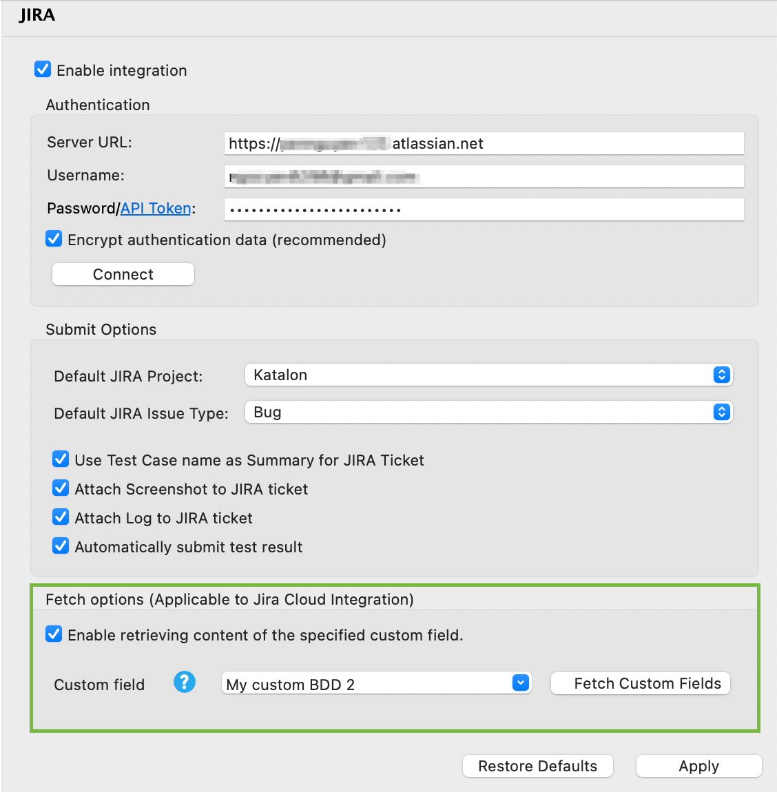

Import BDD custom fields from Jira to Katalon Studio (Applicable to Jira Cloud integration)
This step is necessary if you want to conduct BDD testing with Jira. If you don't run BDD tests or you are integrating Jira Data Center (Jira Server) with Katalon, skip this section and move to Import test cases from Jira to Katalon Studio.
You have configured the Katalon BDD fields in Jira. See: Manage BDD test cases with Jira integration.
- Go to Projects > Settings > Plugin > Jira.
- In the Fetch Options section, check the Enable retrieving content of the specified custom field box.
- Select a custom field from the dropdown list.Note:
- Only the existing custom field ID is valid for this configuration.
- In case you can not find the custom field in the dropdown list, click Fetch Custom Fields to fetch the latest list from the connected Jira Cloud.
- Click Apply and Close to apply your settings.